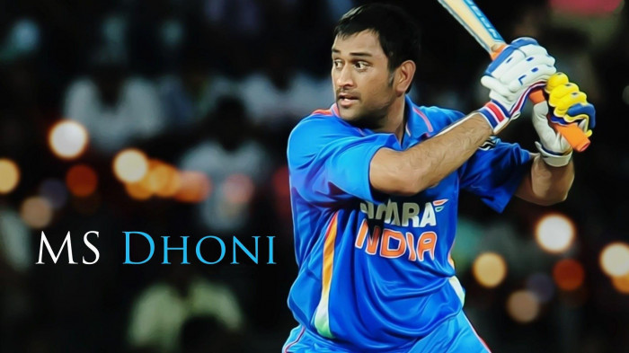

-
About MS Dhoni
Mahendra Singh Dhoni (born 7 July 1981) is a proffesional cricketer and former Indian international Cricketer, who playes as a right-handed wicket-keeper batsman. He captained the India men's national cricket team in limited-overs formats from 2007 to 2017 and in Test cricket from 2008 to 2014.
-
Personal Life
Dhoni was a Ticket checker in South Eastern railway of Indian railway from September 2001 to July 2004 in Kharagpur.He married Sakshi Singh Rawat, his rumoured schoolmate in DAV Jawahar Vidya Mandir, Shyamali, Ranchi and a native of Dehradun, Uttarakhand, on 4 July 2010. After the retirement of Sakshi's father from his tea growing business,her family shifted to their native place, Dehradun.
He has special interest in organic farming. His farm is located at Sembo village near Ring road in Ranchi.
-
Playing Style
Dhoni is a right-handed batsman and wicket-keeper. He is an unorthodox batsman in the sense that much of his batting technique defies the coaching manuals. Dhoni doesn't have a great footwork.
-
Awards and Achievements
2018: Padma Bhushan, India's third-highest civilian award.
2009: Padma Shri, India's fourth-highest civilian award.
2007–08: Major Dhyanchand Khel Ratna award, India's highest honor given for achievement in sports.
ICC World ODI XI: 2006, 2008, 2009, 2010, 2011, 2012, 2013, 2014 (captain in 2009, 2011–2014)
ICC Men's ODI team of the decade: 2011–2020 (captain and wicketkeeper).
ICC Men's T20I team of the decade: 2011–2020 (captain and wicketkeeper)
-
Photo

Dhoni was contracted by the Chennai Super Kings (CSK) for US$1.5 million. This made him the most expensive player in the IPL for the first season auctions. Under his captaincy, CSK won the 2010, 2011, 2018 and the 2021 Indian Premier League titles and the 2010 and 2014 Champions League T20 titles. MS Dhoni became the first player to play 200 T20 matches for Super Kings. The former India captain is already on top of the list of most matches played in the Indian Premier League. Mahendra Singh Dhoni is also one of the only three captains to have won the Indian Premier League twice, with CSK.
Dhoni is third captain (and the first non-Australian) overall to win 100 games.
Fourth Indian to reach 10,000 ODI runs after Sachin Tendulkar, Sourav Ganguly & Rahul Dravid and also the second wicket-keeper to reach the milestone.
First player to pass 10,000 runs in ODI cricket with having a career average of over 50.
Dhoni has the fifth highest batting average (51.09), among cricketers with more than 5,000 runs and the second highest batting average among players with an aggregate of over 10,000 runs.
Following his good one-day performance against Sri Lanka, Dhoni replaced Dinesh Karthik in December 2005 as the Indian teams' Test wicket-keeper. Dhoni scored 30 runs in his debut match, that was marred by rain. Dhoni came to the crease when the team was struggling at 109/5 and as wickets kept falling around him, he played an aggressive innings in which he was the last man to be dismissed. Dhoni made his maiden half-century in the second Test and his quick scoring rate (half century came off 51 balls) helped India set a target of 436 and the Sri Lankans were bowled out for 247.